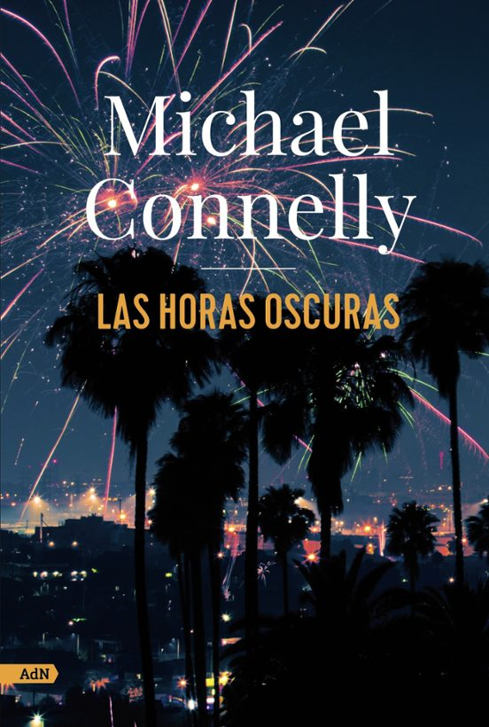
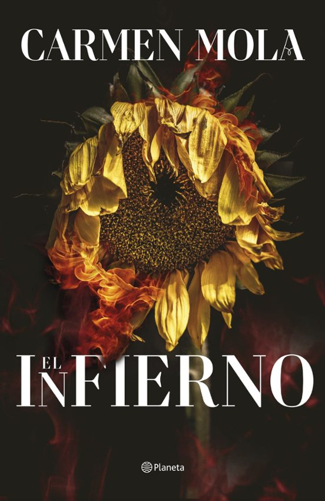

19,99€
Reina el caos en Hollywood en Nochevieja. Renee Ballard, detective del Departamento de Policía de Los Angeles, recibe una llamada poco despues de medianoche: el propietario de un taller de coches ha resultado mortalmente herido por una bala en medio de una fiesta callejera.
Enseguida concluye que está relacionada con otro asesinato sin resolver investigado por el detective Harry Bosch. Al mismo tiempo, Ballard persigue a una perversa pareja de violadores en serie, los Hombres de Medianoche. La detective siente que va a contracorriente en un departamento de policía cambiado por la pandemia y el malestar social, por lo que busca la ayuda de Harry Bosch. Mientras trabajan juntos, deben mirar por encima del hombro constantemente. Los depredadores a los que persiguen están dispuestos a matar para mantener ocultos sus secretos.
20,80€
En febrero de 1939, la guerra civil española da sus últimas dentelladas. Cuando un bombardeo italiano siega la vida de los padres del joven Román, también mutila su capacidad de amar. Pese a no estar enamorado, se casa con Beatriz, una joven de familia bien con quien tendrá un hijo. Pero todo se trastoca cuando él tiene que huir a Francia. Allí conoce a Teresa, una joven comunista con la que inicia una relación cuajada de secretos.
En Barcelona la familia de Beatriz trata de protegerla del pasado «rojo» de Román, de quien no tienen noticias, y falsifican su muerte. Ella ha creado un bufete de abogados e iniciado una nueva vida. Pero cuando Román, tras unos años de exilio tortuoso, consigue la libertad y su pasaporte, siente que lleva mucho tiempo con el corazón lleno de ceniza y emprende un viaje a España en busca de sí mismo y de su verdadera vida, sin saber qué encontrará al llegar a Barcelona.
La serie Katana está equipada con un teclado RGB de 4 zonas con WASD iluminado y teclas especialmente diseñadas. ¡Disfruta de la luz colorida que brilla como la energía del pulso y te brinda una experiencia de juego inmersiva con estilo!
18,90€
Han pasado tres meses desde que mis amigos y yo derrotamos a Cyrus. Tres meses en los que mi mayor temor ha sido lo que vendrá después? Debería haber sabido que esto era demasiado bueno para durar, y ahora todo se está rompiendo en mil pedazos.
No me queda otra opción que volver al Reino de las Sombras y enfrentarme a la terrible reina que casi acaba con todos nosotros. Debo hacer un pacto con ella para salvar a Mekhi, pero esta vez me llevaré a mis poderosos amigos conmigo, y también a Hudson, aunque siento que le pasa algo raro; nos está ocultando un secreto, incluso a mí.
Lo único que sé es que nuestras vidas corren peligro, y todo es culpa mía porque aún le debo un favor a la Anciana? y claramente ha venido a buscarlo.

21,75€
Excelente relación calidad/precio para este PC con componentes de primeras marcas, la máxima garantía y gran rendimiento, ideal para usuarios que buscan hacer "de todo un poco".
Un espeluznante levantamiento del ejército contra la reina Isabel II tiñe de sangre y muertos las calles de Madrid. El pueblo lo llama la sargentada y el horror campa por toda la ciudad. En medio de los cañonazos y los disparos, una bailarina llamada Leonor y un joven estudiante de Medicina de nombre Mauro se ven envueltos en un homicidio involuntario que marcará sus vidas.
Huyendo de la prisión o la muerte, Leonor se ve obligada a aceptar la propuesta de matrimonio de un millonario hacendado cubano con el que huye a La Habana, pero, cuando llega allí, este maravilloso enclave del Caribe no es lo que espera. Las plantaciones de azúcar y los ingenios esconden la tragedia de un esclavismo aún muy vivo. Y, entre los esclavos, la figura de Mauro sorprende a la muchacha. En un intento desesperado por escapar de ese infierno, ambos descubrirán que el ingenio donde se encuentran oculta una terrible trama para asesinar a un grupo de terratenientes siguiendo un rito ancestral brutalmente feroz.
![]()